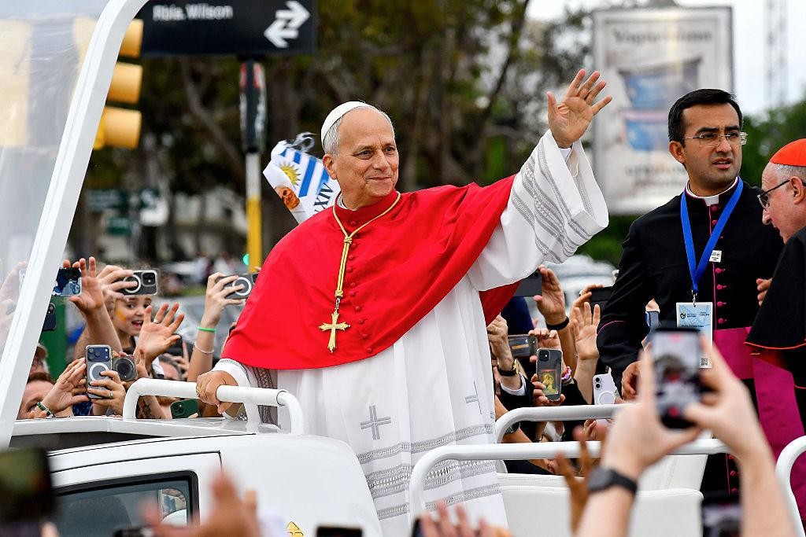

La visita de un papa a Uruguay es un acontecimiento muy importante para la comunidad católica y para todo el país. Representa una oportunidad para transmitir mensajes de paz, unión, solidaridad y esperanza.
Uruguay es un país con una importante historia de tradición católica, aunque también se caracteriza por ser un Estado laico. La Iglesia católica tiene presencia en distintas comunidades y participa en actividades sociales, educativas y solidarias.
El papa León XIV visitó Uruguay entre el 6 y el 8 de noviembre de 2026. Fue una visita histórica, ya que fue el primer papa en visitar el país después de 38 años. El anterior había sido Juan Pablo II, en 1987 y 1988.
